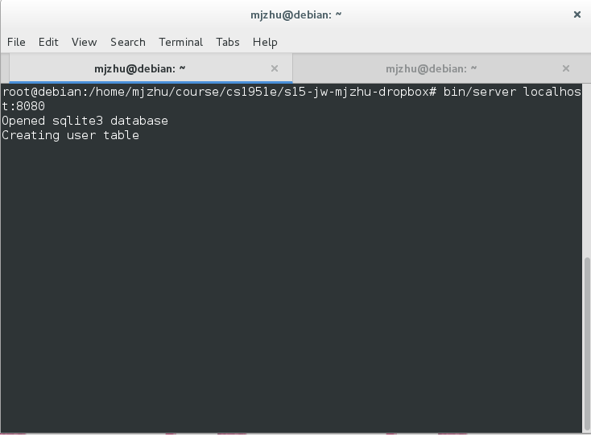
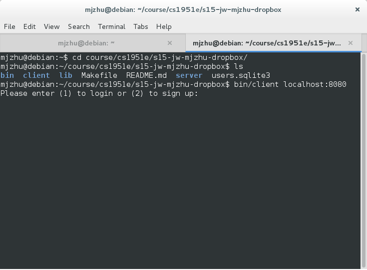
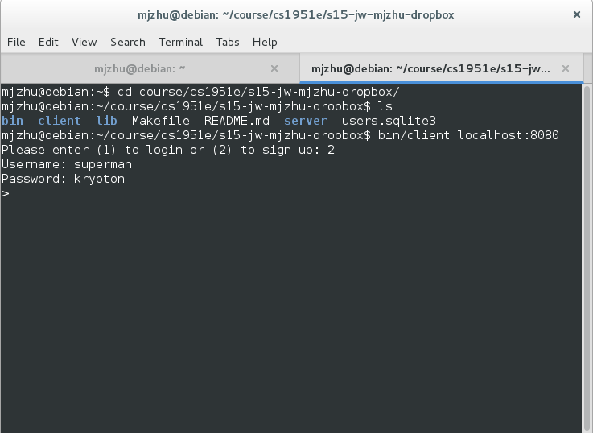
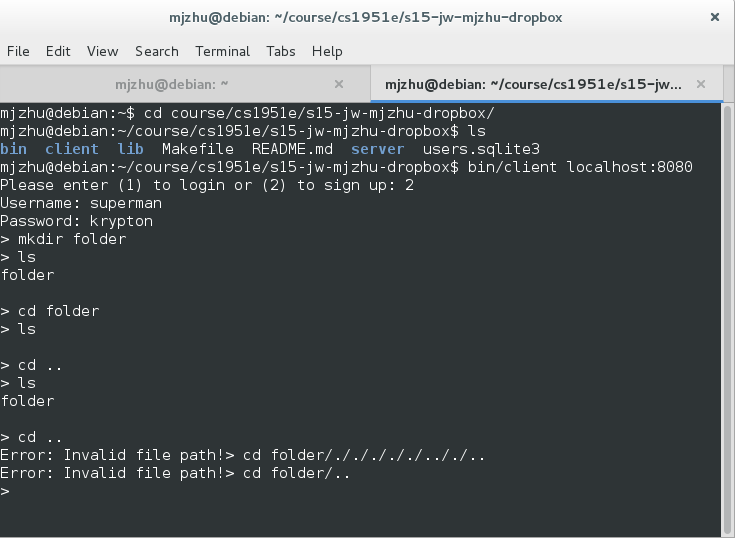
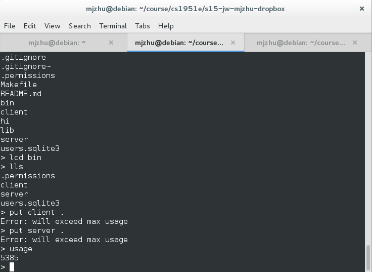
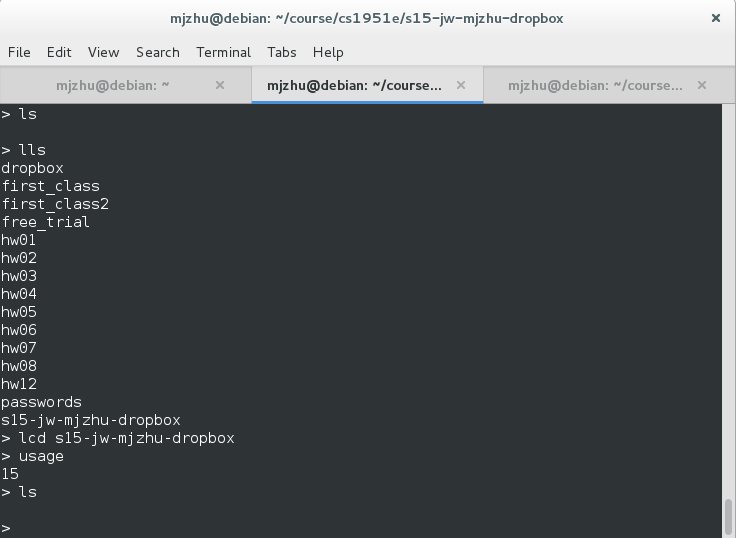
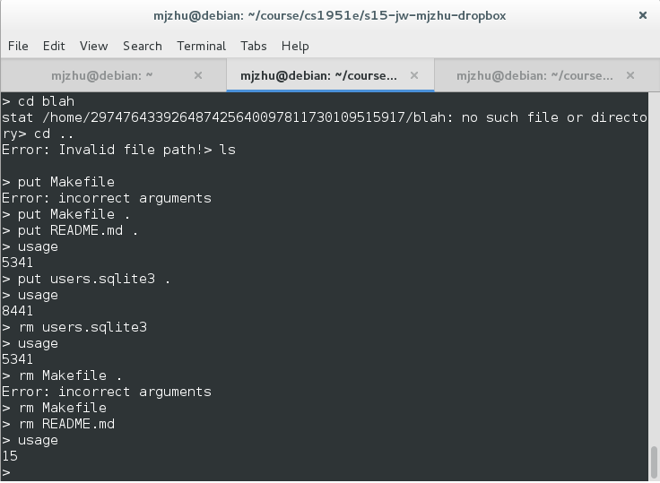
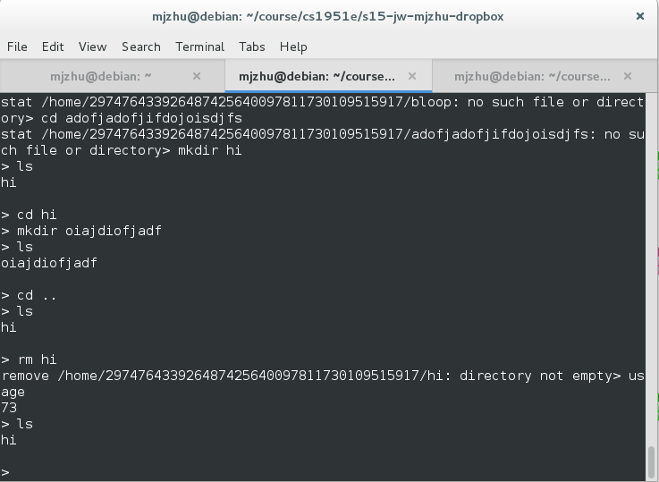

This project is an implementation of a Dropbox-like application where users can interact with a remote server through an sftp-like interface. Users are able to put and get files, make directories, remove files, and change local and remote working directories through the command line. The application was written in Go, and the client interfaces with the server through remote procedure calls; the server has publicly exposed functions that any outside client can access. Each function call, besides the login and signup functions, take in a session token that is issued by the server to each client when they log in or sign up. In the above shell image, the server is being started in root mode as it needs to create files in the "home" directory.

Once the server is up and running, any number of clients can connect to the server port. Users can choose to log in or sign up.

If a user chooses to sign up, the client sends the username and password combination to the server, which then stores the username and hashed password in a SQLite database. The program also creates a unique subroot for the user that is the hash of the username and password, ensuring that guessing the subroot of any user is at least as hard as guessing their username and password.

Users are able to create directories naturally. They are jailed inside this remote subroot. They cannot "cd" or "ls" out of it and attack system files or access other users' data, or expose metadata about other users.

Users can use the "cd" and "ls" commands to interact with the remote file system, and the "lcd" and "lls" commands to interact with their local file system, just like sftp. Each user has a usage cap around 5MB, and are not allowed to exceed that.

The initial usage is 15 bytes to account for the size of the subroot.

Here, we see the usage after putting and removing files. The usage is sound and will not change if a file is added and then removed.

Directories are also accounted for in the usage amount. This is because directories are just executable files, and like all files take up space. This is to prevent a user from executing a DoS attack by taking up all the space in the machine with a huge number of directories.